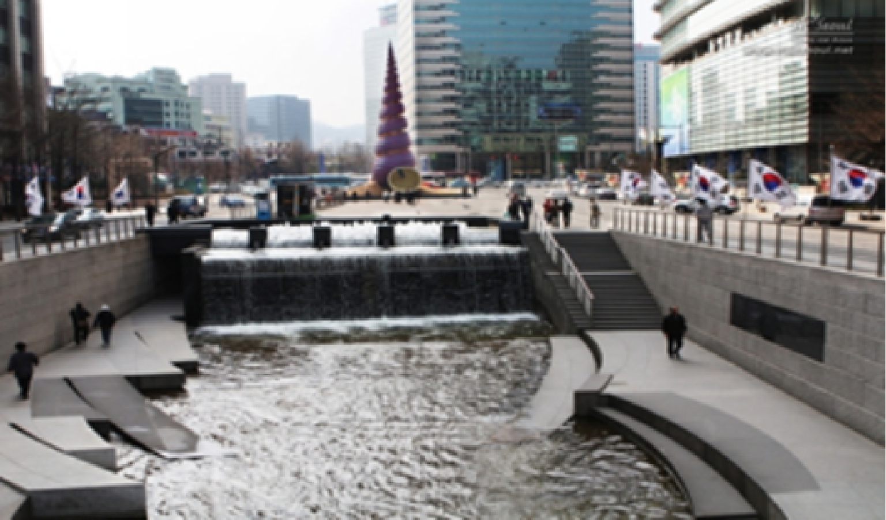
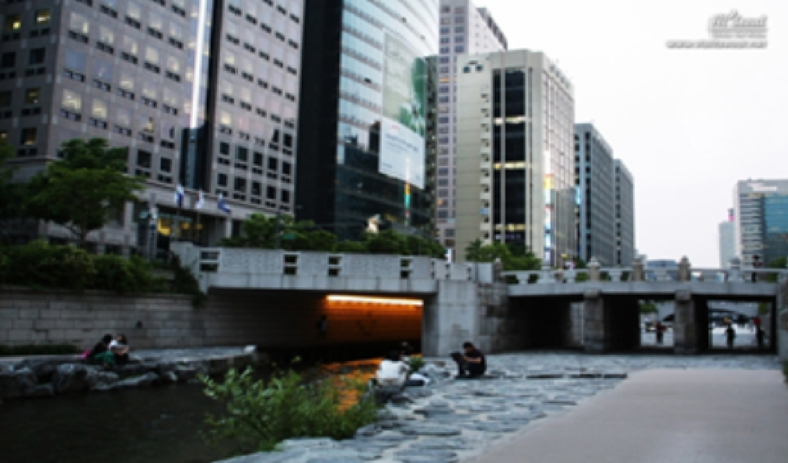
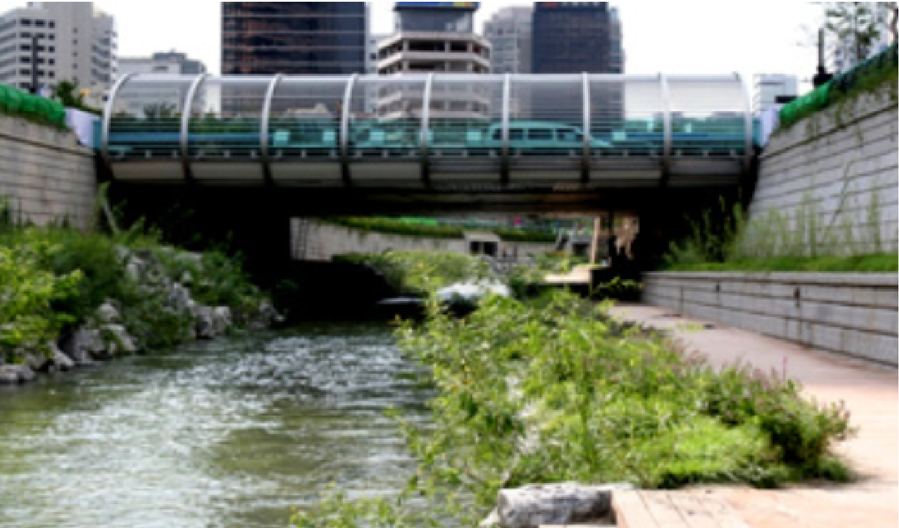

청계천
- 청계광장
- 청계천 복원 사업이 이루어지던 2005년 3월 서울특별시에서
지명위원회를 열어 확정한 명칭으로, 청계천의 시작 지점인
세종로 동아일보사 앞 광장을 가리키며, 청계천으로 진입하는
공간으로서 삼색 조명이 어우러진 촛불 분수와 4m 아래로
떨어지는 2단 폭포가 설치되어 있다.

청계천
- 광통교
- 종로네거리에서 을지로네거리 방향으로 나가다가 청계로와
만나는 길목의 청계천 위에 놓여있던 다리이다. 조선시대
광통방에 위치하고 있어 광통교 혹은 광교라고 불렀고,
소광통교와 구분하여 대광통교로도 불렀으며,
일명 큰광교 · 큰광통교로도 불렀다.

청계천
- 삼일교
- 1919년 3월 1일 탑골공원에서 독립선언을 한 뒤 전국에서
일제의 탄압에 항거하는 시위운동을 벌였기 때문에 이를 기념하기 위해
명명된 삼일로 인근에 위치하여 명칭을 인용했다.
